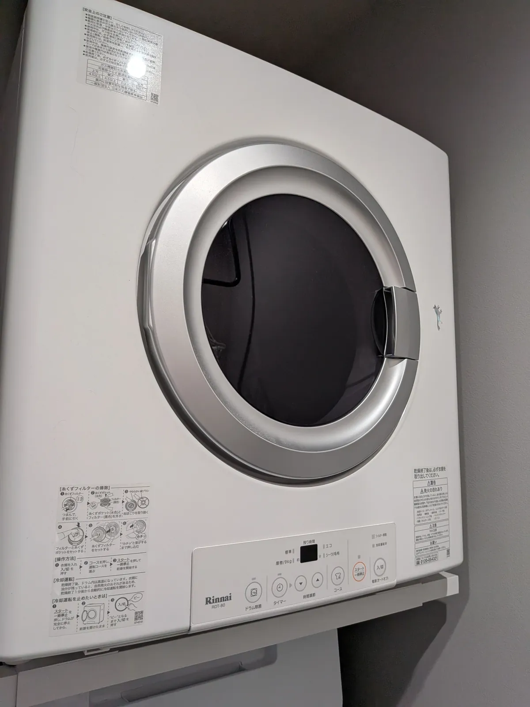
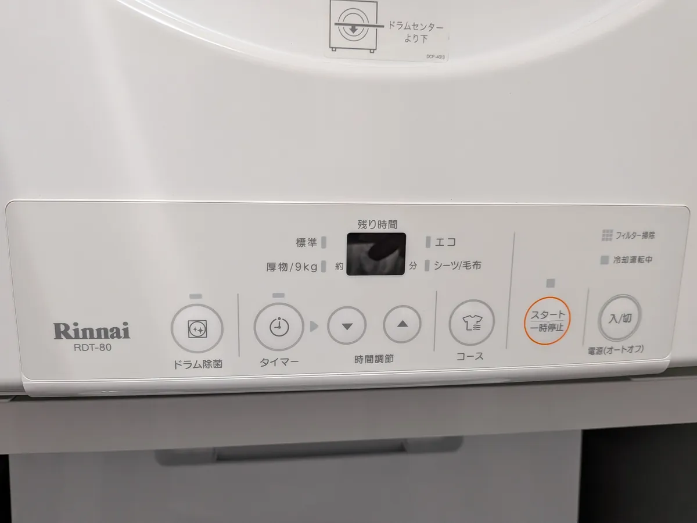
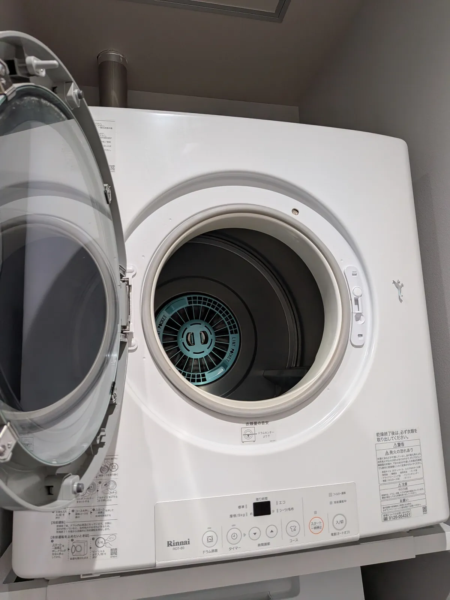
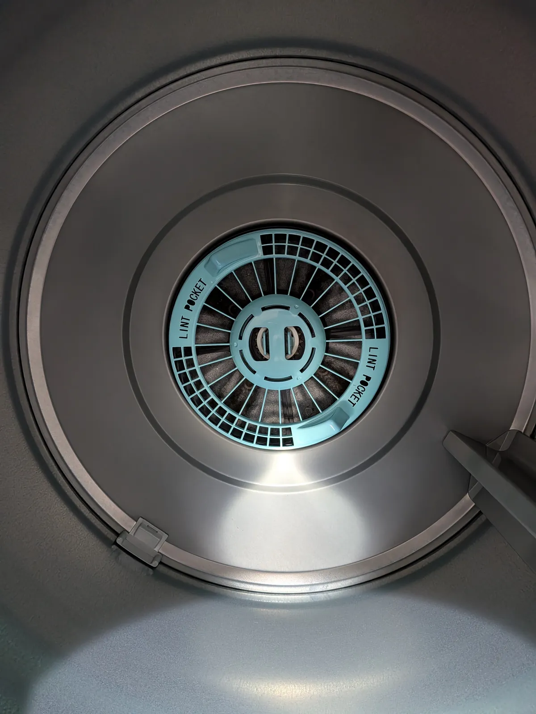
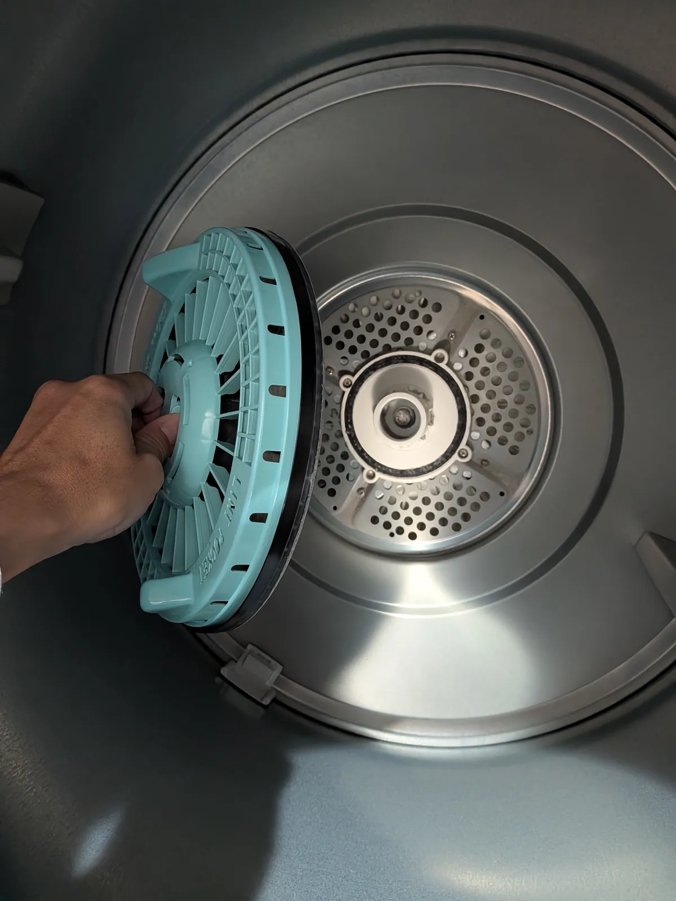

※本記事にはプロモーション（PR）が含まれています。
乾太くんを4人家族で4年使ったリアルなレビュー｜子どもの服もシーツもすぐ乾く
40代夫婦と6歳・2歳の子どもの4人家族で、リンナイのガス衣類乾燥機「乾太くん RDT-80」を4年使っています。標準乾燥容量8kgの都市ガス用で、洗濯機の日立ビートウォッシュの上に縦に重ねて置いています。子どもがいる家の洗濯がどう変わったのか、いいところも気になるところも正直に書きます。

乾太くんを買う前の洗濯
乾太くんを使う前は、外干しか浴室乾燥で洗濯物を乾かしていました。
わが家の使い方
夏は1日1回、冬は服がかさばるので1日2回回しています。おしゃれ着以外はほぼ全部乾太くんで乾かしていて、シーツや毛布も乾太くんにおまかせです。


子どもがいる家で助かっていること
子どもたちは毎日の生活でも保育園でも服を汚して、着替えて帰ってきます。そんな服も、その日のうちにすぐ洗って乾かせるのが本当に助かっています。
よかったところ
外干しや部屋干しのときは、ニオイが気になることがありました。乾太くんにしてからは、乾燥後のニオイがほぼ気にならなくなりました。


※価格はリンク作成時点のものです。最新の価格はリンク先でご確認ください。
※この商品は配送のみで、取り付け工事は含まれていません。
気になるところ
- 乾燥中の音が少し気になる。 わが家は乾太くんとリビングのあいだに扉が1枚ありますが、それでも少し聞こえます。
フィルター掃除はかんたん
フィルター掃除は週に1〜2回しています。たまった糸くずのかたまりを指でつまんで取るだけなので、かんたんです。


縦置きの注意点
うちは縦置きですが、横に並べられるなら横がいいと思います。上に置くこと自体はいいのですが、中が見えにくくて取り出しがちょっと大変です。わが家では踏み台を使っています。
※乾太くんの設置にはガスの工事が必要です。購入前に、設置できるかどうかを販売店やガス会社に確認してください。
こんな家族におすすめ
今日使った洗濯物を、翌日もまた使うことが多い家族におすすめです。わが家のように子どもがいて毎日洗濯物が多い家では、すぐに洗って乾かせる安心感が大きいです。
※価格はリンク作成時点のものです。最新の価格はリンク先でご確認ください。
※この商品は配送のみで、取り付け工事は含まれていません。
よくある質問
1日に何回使っていますか？
夏は1日1回、冬は服がかさばるので1日2回回しています。
どんなものを乾かしていますか？
おしゃれ着以外はほぼ全部です。シーツや毛布も乾太くんで乾かしています。
フィルター掃除は大変ですか？
週に1〜2回、たまった糸くずのかたまりを指でつまんで取るだけなので、かんたんです。
縦置きと横置き、どちらがいいですか？
うちは縦置きですが、横に並べられるなら横がいいと思います。上に置くと中が見えにくく取り出しがちょっと大変で、わが家では踏み台を使っています。